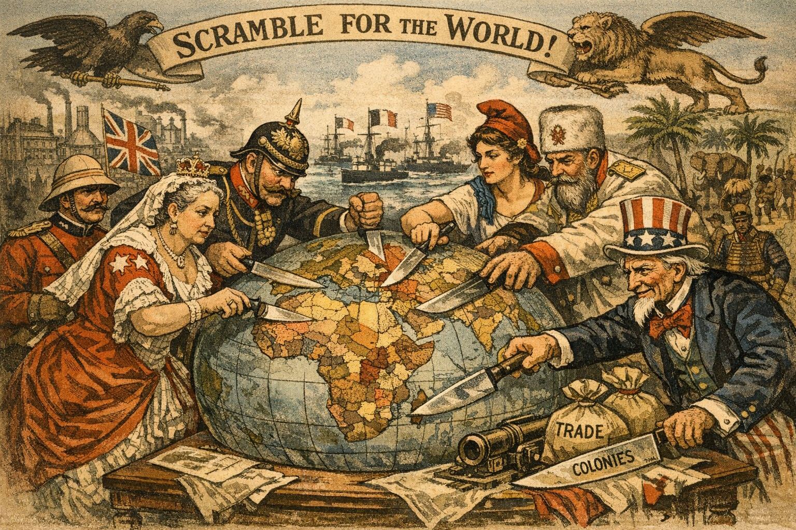
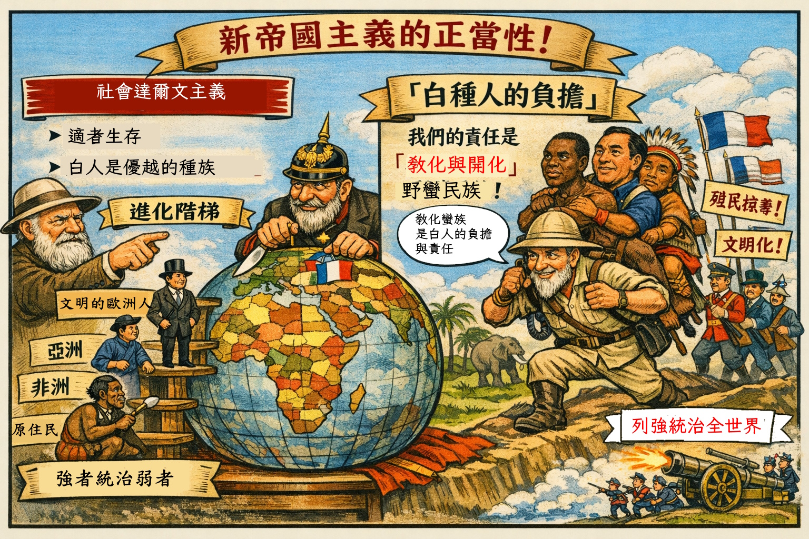
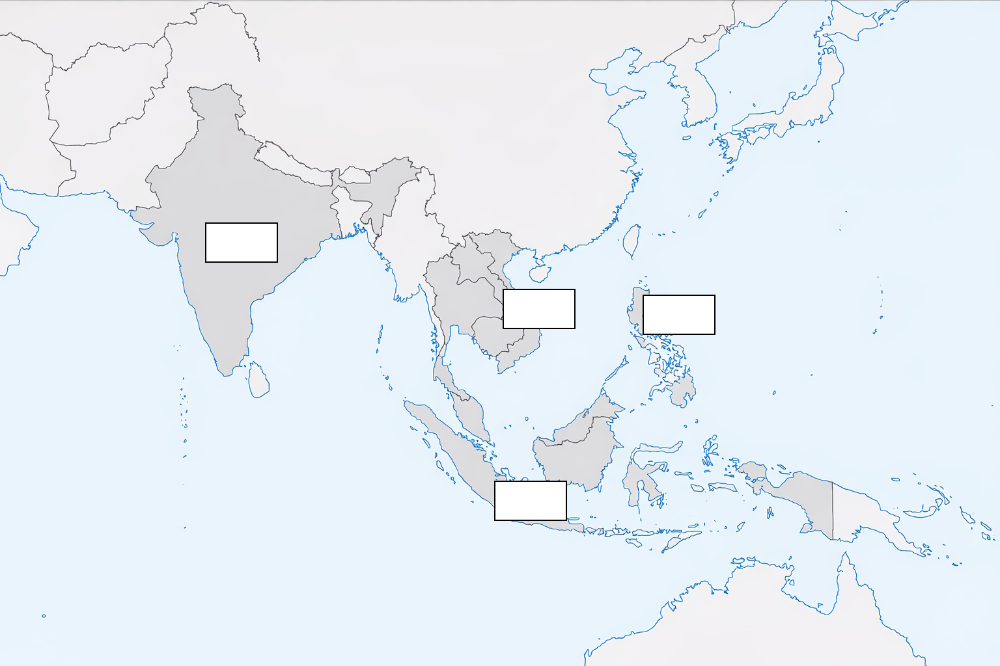
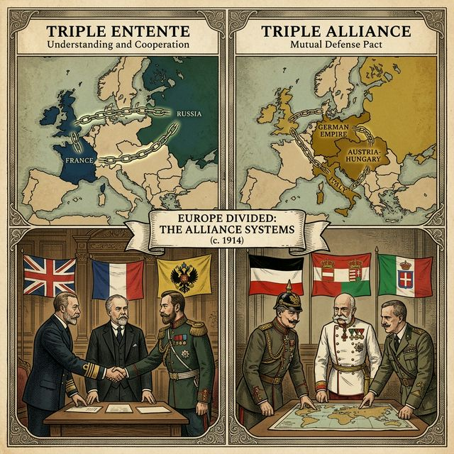
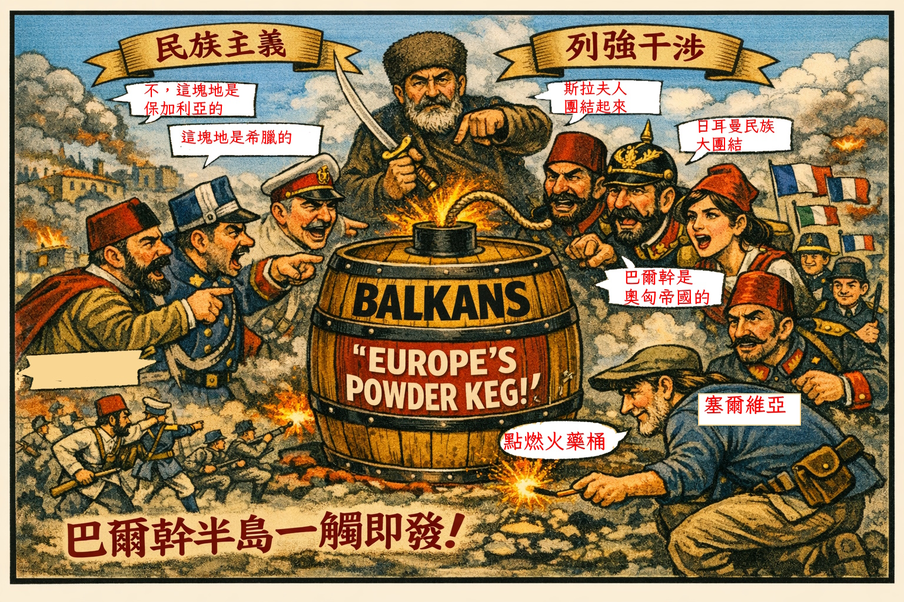
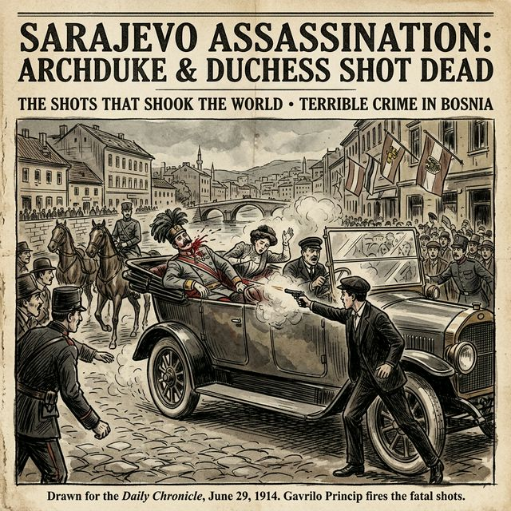
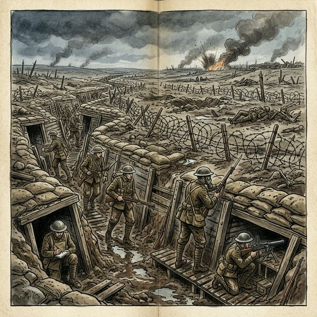

19 世紀中期以後，取得工業革命優勢的歐美列強，為了尋找更廣大的商品市場與取得廉價工業原料，積極向亞洲、非洲與拉丁美洲進行「新帝國主義」的侵略與擴張。
當時社會上流行「社會達爾文主義」，認為人類社會也如同自然界一樣「優勝劣敗，適者生存」。白種人更以「白種人的負擔」自居，認為自己有義務將「文明」傳播給其他地區，這更助長了列強向外侵略的氣燄。
在這波擴張中，非洲幾乎被列強瓜分殆盡（僅存衣索比亞與賴比瑞亞獨立）；亞洲多數地區也淪為列強的殖民地（例如英國控制印度、法國控制中南半島）；而拉丁美洲各國雖然在名義上獲得獨立，但經濟命脈卻幾乎全被歐美資本所控制。



20 世紀初，歐洲列強為了爭奪海外殖民地與巴爾幹半島的利益，相互結盟，形成了兩大互相對抗的軍事陣營：
1. 三國同盟：以德國為首，聯合奧匈帝國與義大利。
2. 三國協約：由英國、法國與俄國組成。
當時，巴爾幹半島的問題最為複雜。此地原本受鄂圖曼帝國統治，但隨著帝國衰弱，各民族紛紛爭取獨立。加上俄國與奧匈帝國皆企圖將勢力伸入此區，使得巴爾幹半島民族與宗教衝突不斷，危機四伏，因此被稱為「歐洲火藥庫」。


1914 年 6 月，奧匈帝國皇儲夫婦在波士尼亞首府塞拉耶佛遭到塞爾維亞民族主義者暗殺事件，成為引爆第一次世界大戰的導火線。隨後奧匈帝國向塞爾維亞宣戰，在兩大結盟體系的連鎖反應下，歐洲各國紛紛參戰，第一次世界大戰全面爆發。
大戰爆發後，原屬三國同盟的義大利不久後便轉換陣營，加入協約國對抗德奧。
大戰初期，德國試圖迅速擊敗法國，但在西線被英法聯軍阻擋。雙方為了防禦敵方猛烈的機槍與火炮，開始深挖戰壕，形成了漫長且僵持不下的「壕溝戰」。士兵們在泥濘與老鼠充斥的環境下作戰，戰爭形勢轉為殘酷的消耗戰。


到了 1917 年，歐洲各國已經在長期的消耗戰中疲憊不堪，但戰局卻在這年迎來了決定性的轉折。
首先，德國為了切斷英國的海上物資補給，實施了「無限制潛艇政策」，宣告任何接近英國的船隻都會被潛艇擊沉。這導致多艘載著美國平民與物資的船隻被擊沉，極大激怒了美國。美國因此決定在 1917 年加入協約國參戰，為協約國注入了強大的生力軍。
同一年，東線的俄國國內發生了共產黨革命，新政府為了穩定內政，決定與德國簽訂條約，提早退出了第一次世界大戰。
儘管俄國退出，但有了美國龐大資源與軍隊的加入，協約國逐漸取得決定性優勢。1918 年底，德國與奧匈帝國等同盟國防禦瓦解、國內爆發革命。1918 年 11 月 11 日，德國與協約國簽署停戰協定，歷時四年多的第一次世界大戰終於宣告結束。
大戰結束後，戰勝國於 1919 年召開了「巴黎和會」來懲罰戰敗國與重整世界秩序。這場會議幾乎由英、法、美三個戰勝國主導（被稱為三巨頭）。和會最終對德國簽訂了嚴苛的《凡爾賽條約》，使德國背負了巨大的賠償與割地，埋下了日後二戰的種子。
在和會前，美國總統威爾遜提出了著名的「十四點原則」作為和平基礎。其中最重要的是提倡「民族自決」——讓各民族自己決定自己的命運這促成了戰後東歐許多新興獨立國家的誕生（如波蘭、捷克斯洛伐克等），但同樣的原則卻未被應用在亞洲與非洲的殖民地上。
十四點原則的另一項重要成就是在 1920 年推動成立了第一個國際性維持和平的組織——「國際聯盟」。然而諷刺的是，這個由美國總統全力推倡的組織，卻因為戰後美國國內興起不願再干涉歐洲事務的「孤立主義」，加上美國國會的反對，導致美國最終從未加入國際聯盟，嚴重削弱了國聯維護和平的力量。
🎊 恭喜 時間旅行者 通過測驗！
你已成功穿越了一戰時期的風雲變幻，成為真正的歷史大師！